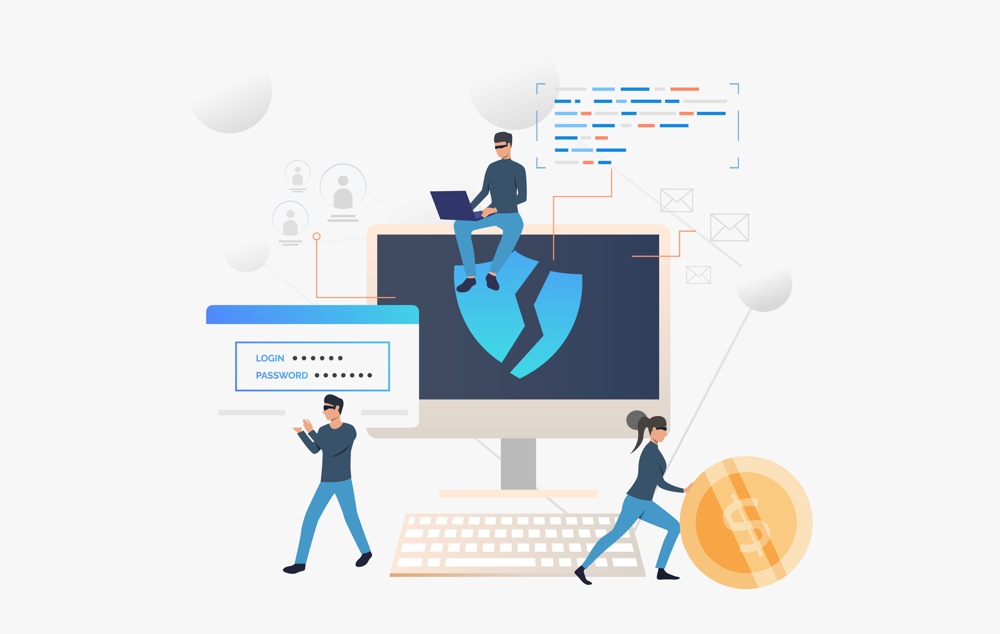

Amenazas en la red
AMENAZAS


Ahora que para realizar muchas de nuestras actividades diarias utilizamos internet; escuchar música, consultar el tiempo, programar la "Roomba", ver netflix o subir un selfie a Instagram , debemos ser mas precavidos que cuando cruzamos la calle. Esta precaución es necesaria aún más después de ver algunas estadísticas críticas:
"La mitad de las computadoras del mundo han estado infectadas en algún momento con algún tipo de malware". 
El delito cibernético ahora es un gran negocio y los delincuentes buscan robar información como detalles financieros, información de tarjetas de crédito, datos personales o cualquier otra información que puedan vender o intercambiar. Estos delincuentes son cada vez más sofisticados y emplean muchos métodos diferentes para atacar.
.
 DEBATIMOS....
DEBATIMOS....